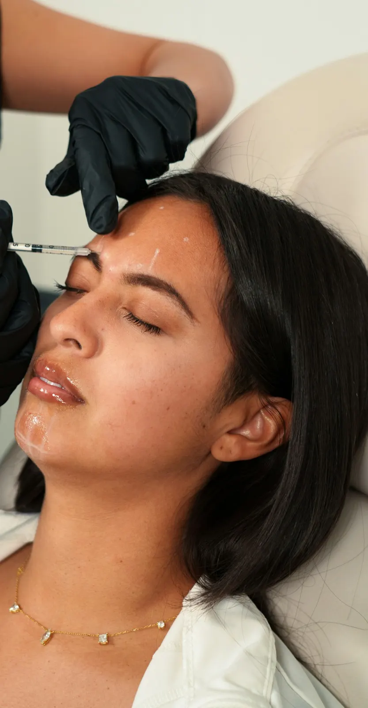
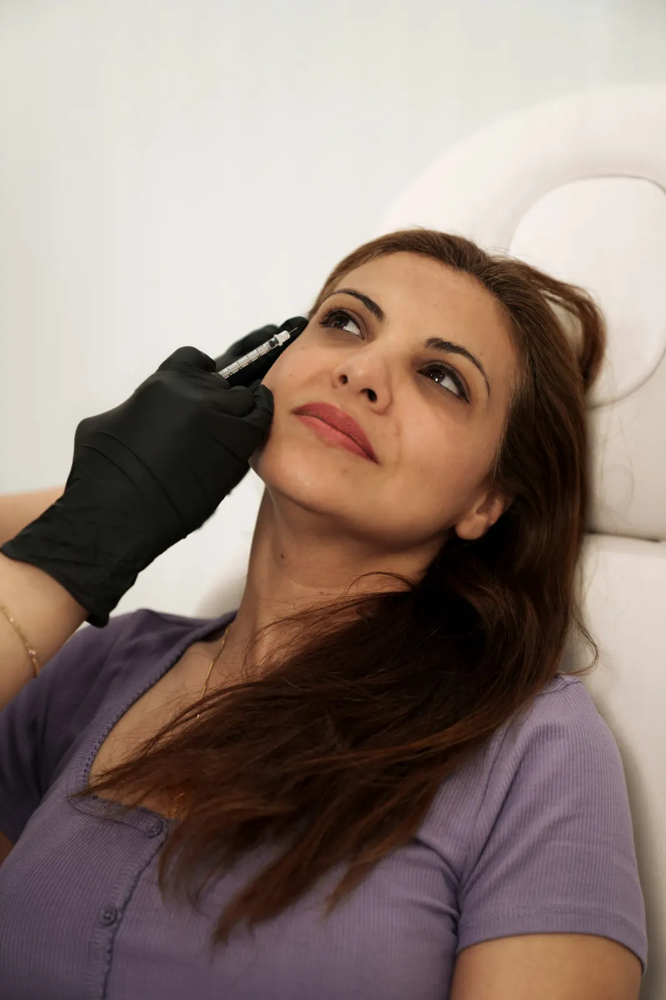
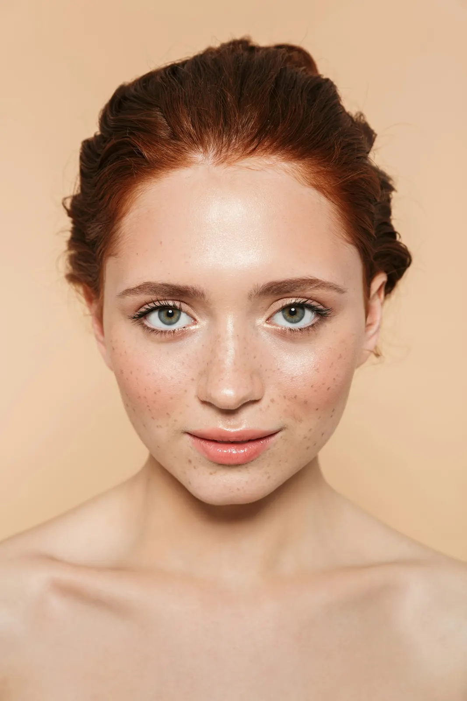
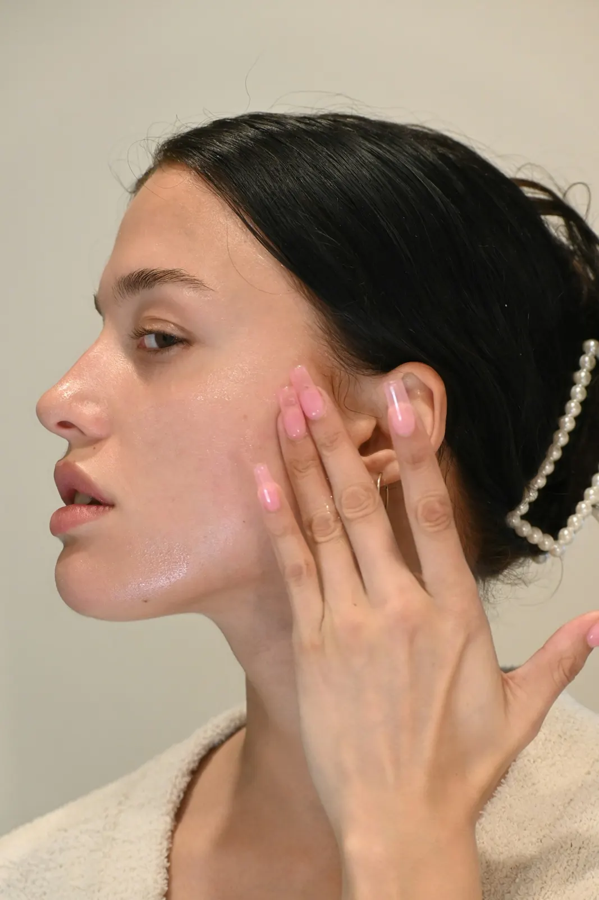

Preço fixo, sem “depende”
O valor da tabela é o valor que você paga. Sem pacote escondido e sem surpresa no fim: de R$ 1.190 a R$ 2.990.
Harmonização facial · Boa Viagem, Recife
Nunca outra pessoa. Resultado natural com preço fixo na tabela, produto aprovado pela Anvisa com o lote aberto na sua frente e retoque sem custo em até 15 dias.
Conheça a Dra. BiancaExperiência
O valor da tabela é o valor que você paga. Sem pacote escondido e sem surpresa no fim: de R$ 1.190 a R$ 2.990.
Só produto aprovado pela Anvisa. Você vê o frasco, o lote e a validade antes da aplicação e leva tudo anotado.
Uma paciente por vez, sem empurrar procedimento. Se não valer a pena para o seu rosto, a Dra. Bianca diz. Retoque sem custo em 15 dias.
Preenchimento labial
Botox na testa

Foto ilustrativaOlheiras

Foto ilustrativaBioestimulador

Foto ilustrativaMandíbula e queixo

Foto ilustrativaSkinbooster
Fotos ilustrativas de banco de imagens (Unsplash): não são pacientes da clínica. Não publicamos antes e depois de pacientes. Resultados variam de pessoa para pessoa.
Nossos serviços
A avaliação de 40 minutos olha o rosto inteiro: contorno, simetria, volume, pele e proporções do terço superior ao pescoço. Você sai com um plano por etapas, o preço de cada etapa por escrito e a ordem que faz sentido para o seu orçamento. A avaliação não tem custo.
Suaviza as linhas sem travar o rosto. Também trata bruxismo e suor em excesso.
Contorno e hidratação com 0,5 a 1 ml. Vocês definem juntas o formato antes de começar.
Ácido hialurônico em pouca quantidade no sulco abaixo do olho. Tira o ar de cansaço.
Devolve o volume que o rosto perde com o tempo e levanta o terço médio, sem efeito de bochecha.
Marca o ângulo da mandíbula e equilibra o perfil. É o que mais muda a foto de lado.
Estimula o seu próprio colágeno para firmar rosto e pescoço. O resultado aparece em cerca de 60 dias.
Hidratação profunda com ácido hialurônico não reticulado, em 3 sessões com 30 dias de intervalo. Viço sem filtro.
Em até 15 dias depois do procedimento, se algum ponto precisar de ajuste, o retoque está incluso no preço.
15 minutos pelo WhatsApp para quem mora longe de Boa Viagem: a Dra. Bianca vê o rosto, tira dúvidas e diz se vale a viagem.
Você manda uma foto no mesmo ângulo da primeira e recebe a orientação de cuidados para manter o resultado por mais tempo.
Quem atende
A Dra. Bianca é dentista com especialização em harmonização orofacial. São 9 anos de atendimento e mais de 6 mil procedimentos feitos aqui em Boa Viagem.
Ela atende uma paciente por vez, faz toda a aplicação pessoalmente e diz com todas as letras quando um procedimento não vale a pena para você. Nada é delegado e nenhum horário é encaixado no meio de outro.
Falar com a Dra. Bianca4,9 (427 avaliações no Google)
Ninguém percebeu que eu fiz nada. Só me perguntam se eu tirei férias. A Dra. Bianca mostrou no espelho o que ia mudar antes de aplicar.
Eu tinha medo de ficar com boca de pato. Ela usou menos de 1 ml e o desenho ficou do jeito que combinamos. O inchaço sumiu em dois dias.
Fui com uma lista de cinco coisas e saí fazendo só uma. Ela disse que o resto não ia fazer diferença. Isso me ganhou.
O preço foi exatamente o da tabela do site. Vi o lote do produto, recebi tudo anotado e voltei aos 15 dias para um retoque sem pagar nada.
Minha foto de lado mudou. Não ficou quadrado, ficou meu rosto de dez anos atrás. Atendimento pontual e sem pressa.
Fiz as 3 sessões antes do meu casamento. A maquiadora perguntou qual base eu usava. Nenhuma.
Moro em Caruaru e fiz a pré-avaliação por vídeo. Quando cheguei, ela já sabia o que eu queria. Valeu a viagem.
Achei que fosse doer muito e não doeu. O ar de cansaço foi embora e eu continuo com a minha cara.
A pele recebe anestésico em creme 20 minutos antes e os preenchedores já vêm com lidocaína. A maioria das pacientes dá nota 2 ou 3 de 10.
O plano é sempre o mínimo que resolve. Se o rosto pede 1 ml, não aplicamos 2. E o retoque em 15 dias corrige qualquer ponto sem custo.
Sim, na maioria dos casos. Botox e bioestimulador não têm recuperação; lábios e olheiras podem inchar por 1 a 2 dias.
Pix, débito e crédito em até 6 vezes sem juros. O preço é o da tabela, sem pacote obrigatório.
Não. São 40 minutos com a Dra. Bianca e você não precisa sair dali com nada marcado.
Nossos números
6.000+
procedimentos em 9 anos, com pacientes de 14 cidades de Pernambuco e de 3 estados vizinhos.
4,9
de nota no Google, com 427 avaliações de pacientes reais da clínica em Boa Viagem.
40 min
de avaliação, cerca de 2 vezes o tempo comum, para um plano feito para o seu rosto.
O presente certo
O vale-presente da Dra. Bianca é mais que um presente: é uma avaliação sem pressa e um resultado que ninguém percebe, só elogia. Vale a partir de R$ 300, por 12 meses, em qualquer procedimento. Entregamos numa caixa na clínica ou mandamos pelo WhatsApp.
Trouxe uma amiga? As duas ganham. Quando a sua indicação faz o primeiro procedimento, cada uma ganha uma sessão de skinbooster.
Acompanhe as dicas em @drabiancamoraes